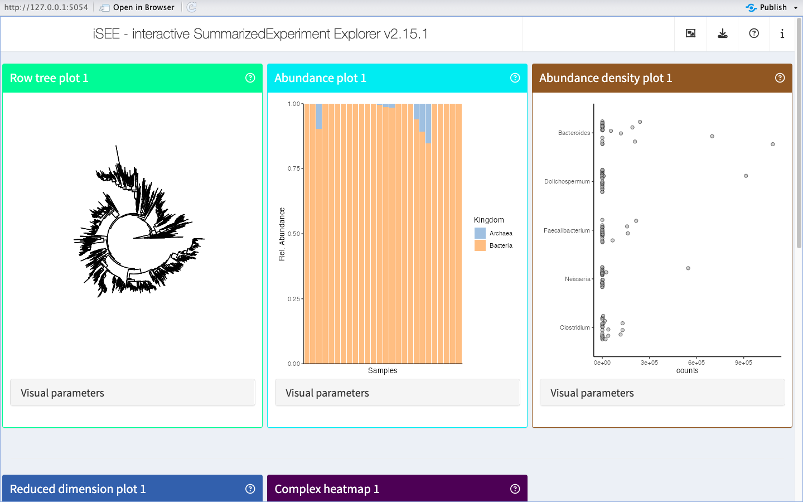

vignettes/iSEEtree.Rmd
iSEEtree.RmdiSEEtree is a Bioconductor package for the interactive visualisation of hierarchical data stored in a TreeSummarizedExperiment (TreeSE) container. On the one side, it leverages and extends the graphics of the iSEE package, which is designed for the generic SummarizedExperiment class. On the other side, it employs the statistical and visual tools for microbiome data science provided by the mia family of packages. Thus, iSEE and mia represent the two building blocks of iSEEtree. Detailed introductory material on these two frameworks is available in the iSEE-verse website and the OMA Bioconductor book, respectively.
iSEEtree is meant for new and experienced users alike, who desire to create and interact with several graphics for hierarchical data, without the need for an in-depth knowledge of the underlying mia functionality. Current panels include compositional plots, ordination graphs and structural tree or networks, which are further discussed in the current article and in the online package documentation. Other more generic panels are also inherited from the parent package iSEE and its many extensions.
iSEEtree derives its microbiome-related visualisation methods from the miaViz package, which is code-based and requires basic knowledge of R programming and microbiome data structures. The panels provided represent an easy-to-use interactive version of most miaViz plotting functions. They allow to visualise several aspects of hierarchical data by three general approaches: compositional, ordination and structural analysis.
These panels can be used to explore sample composition and feature prevalence or abundance across samples. This topic is further discussed in the OMA chapter on Community Composition.
These panels show the results of ordination analyses or dimensionality reduction methods applied to the assay data, both in terms of reduced components as well as explained variance and feature importance. This topic is further discussed in the OMA chapter on Community Similarity.
The structure or organisation of hierarchical data can be explored with the tree and network visualisations that provide a holistic picture of the structured relationships across features or samples. This topic is further discussed in the OMA chapters on Exploration and Networks.
By default, the iSEEtree layout also includes the following panels inherited by iSEE:
The ColumnDataPlot could also prove useful for the visualisation of column variables such as alpha diversity indices. Its interpretation is explained in the OMA chapter on Community Diversity.
For more information on the available panels, users are directed to the iSEEtree panel catalogue in the main package documentation.
R is an open-source statistical environment which can be easily modified to enhance its functionality via packages. iSEEtree is an R package available on Bioconductor. R can be installed on any operating system from CRAN after which you can install iSEEtree by using the following commands in your R session:
if (!requireNamespace("BiocManager", quietly = TRUE))
install.packages("BiocManager")
BiocManager::install("iSEEtree")The panels described above can be generated for a model TreeSE object in the following example:
library(iSEEtree)
library(mia)
library(scater)
# Import TreeSE
data("Tengeler2020", package = "mia")
tse <- Tengeler2020
# Add relabundance assay
tse <- transformAssay(tse, method = "relabundance")
# Add reduced dimensions
tse <- runMDS(tse, assay.type = "relabundance")
# Launch iSEE
if (interactive()) {
iSEE(tse)
}
TreeSE objects can be constructed from raw data and standardised file formats. However, several packages provide access to demonstration datasets used to familiarise with the use of TreeSE objects. A complete list of resources is available in the OMA chapter on Data Import.
In addition, we provide the Microbiome Analysis Dashboard (miaDash), a web app based on iSEEtree that offers a complete interface to import, analyse and visualise microbiome data, or to easily access mia datasets for experimentation purposes. The app is hosted online at this address by the Finnish IT Center for Science (CSC).
Users interested in general topics about the iSEE interface are redirected to the documentation of the iSEE parent package, which provides ideas and solutions on how to:
We hope that iSEEtree will be useful for your research. Please use the following information to cite the package and the overall approach. Thank you!
citation("iSEEtree")
#> To cite iSEEtree in publications use:
#>
#> Benedetti, G., Seraidarian, E., Pralas, T., Jeba, A. Borman, T., &
#> Lahti, L. (2025). iSEEtree: interactive explorer for hierarchical
#> data. Bioinformatics Advances. doi:
#> https://doi.org/10.1093/bioadv/vbaf107
#>
#> A BibTeX entry for LaTeX users is
#>
#> @Article{,
#> title = {iSEEtree: interactive explorer for hierarchical data},
#> author = {Giulio Benedetti and Ely Seraidarian and Theotime Pralas and Akewak Jeba and Tuomas Borman and Leo Lahti},
#> journal = {Bioinformatics Advances},
#> year = {2025},
#> doi = {https://doi.org/10.1093/bioadv/vbaf107},
#> }iSEEtree originates from the joint effort of the R/Bioconductor community. It is mainly based on the following software:
If you are asking yourself the question “Where do I start using Bioconductor?” you might be interested in this blog post.
As package developers, we try to explain clearly how to use our packages and in which order to use the functions. But R and Bioconductor have a steep learning curve so it is critical to learn where to ask for help. The blog post quoted above mentions some but we would like to highlight the Bioconductor support site as the main resource for getting help: remember to use the iSEEtree tag and check the older posts. Other alternatives are available such as creating GitHub issues and tweeting. However, please note that if you want to receive help you should adhere to the posting guidelines. It is particularly critical that you provide a small reproducible example and your session information so package developers can track down the source of the error.
R session information:
#> R version 4.5.1 (2025-06-13)
#> Platform: x86_64-pc-linux-gnu
#> Running under: Ubuntu 24.04.2 LTS
#>
#> Matrix products: default
#> BLAS: /usr/lib/x86_64-linux-gnu/openblas-pthread/libblas.so.3
#> LAPACK: /usr/lib/x86_64-linux-gnu/openblas-pthread/libopenblasp-r0.3.26.so; LAPACK version 3.12.0
#>
#> locale:
#> [1] LC_CTYPE=en_US.UTF-8 LC_NUMERIC=C LC_TIME=en_US.UTF-8 LC_COLLATE=en_US.UTF-8
#> [5] LC_MONETARY=en_US.UTF-8 LC_MESSAGES=en_US.UTF-8 LC_PAPER=en_US.UTF-8 LC_NAME=C
#> [9] LC_ADDRESS=C LC_TELEPHONE=C LC_MEASUREMENT=en_US.UTF-8 LC_IDENTIFICATION=C
#>
#> time zone: UTC
#> tzcode source: system (glibc)
#>
#> attached base packages:
#> [1] stats4 stats graphics grDevices utils datasets methods base
#>
#> other attached packages:
#> [1] scater_1.37.0 ggplot2_3.5.2 scuttle_1.19.0
#> [4] mia_1.17.5 TreeSummarizedExperiment_2.17.1 Biostrings_2.77.2
#> [7] XVector_0.49.0 MultiAssayExperiment_1.35.9 iSEEtree_1.3.2
#> [10] iSEE_2.21.1 SingleCellExperiment_1.31.1 SummarizedExperiment_1.39.1
#> [13] Biobase_2.69.0 GenomicRanges_1.61.1 Seqinfo_0.99.2
#> [16] IRanges_2.43.0 S4Vectors_0.47.0 BiocGenerics_0.55.1
#> [19] generics_0.1.4 MatrixGenerics_1.21.0 matrixStats_1.5.0
#> [22] BiocStyle_2.37.1
#>
#> loaded via a namespace (and not attached):
#> [1] splines_4.5.1 later_1.4.4 ggplotify_0.1.2 tibble_3.3.0
#> [5] cellranger_1.1.0 polyclip_1.10-7 DirichletMultinomial_1.51.0 lifecycle_1.0.4
#> [9] doParallel_1.0.17 miaViz_1.17.9 lattice_0.22-7 MASS_7.3-65
#> [13] SnowballC_0.7.1 magrittr_2.0.3 sass_0.4.10 rmarkdown_2.29
#> [17] jquerylib_0.1.4 yaml_2.3.10 httpuv_1.6.16 DBI_1.2.3
#> [21] RColorBrewer_1.1-3 abind_1.4-8 purrr_1.1.0 fillpattern_1.0.2
#> [25] ggraph_2.2.2 yulab.utils_0.2.1 tweenr_2.0.3 rappdirs_0.3.3
#> [29] circlize_0.4.16 ggrepel_0.9.6 tokenizers_0.3.0 irlba_2.3.5.1
#> [33] tidytree_0.4.6 vegan_2.7-1 rbiom_2.2.1 parallelly_1.45.1
#> [37] permute_0.9-8 pkgdown_2.1.3 DelayedMatrixStats_1.31.0 codetools_0.2-20
#> [41] DelayedArray_0.35.2 ggforce_0.5.0 DT_0.33 ggtext_0.1.2
#> [45] xml2_1.4.0 tidyselect_1.2.1 shape_1.4.6.1 aplot_0.2.8
#> [49] farver_2.1.2 ScaledMatrix_1.17.0 viridis_0.6.5 shinyWidgets_0.9.0
#> [53] jsonlite_2.0.0 GetoptLong_1.0.5 BiocNeighbors_2.3.1 tidygraph_1.3.1
#> [57] decontam_1.29.0 iterators_1.0.14 emmeans_1.11.2-8 systemfonts_1.2.3
#> [61] foreach_1.5.2 tools_4.5.1 ggnewscale_0.5.2 treeio_1.33.0
#> [65] ragg_1.4.0 Rcpp_1.1.0 glue_1.8.0 gridExtra_2.3
#> [69] SparseArray_1.9.1 BiocBaseUtils_1.11.2 xfun_0.53 mgcv_1.9-3
#> [73] dplyr_1.1.4 shinydashboard_0.7.3 withr_3.0.2 BiocManager_1.30.26
#> [77] fastmap_1.2.0 bluster_1.19.0 shinyjs_2.1.0 digest_0.6.37
#> [81] rsvd_1.0.5 R6_2.6.1 mime_0.13 gridGraphics_0.5-1
#> [85] estimability_1.5.1 textshaping_1.0.1 colorspace_2.1-1 listviewer_4.0.0
#> [89] tidyr_1.3.1 DECIPHER_3.5.0 graphlayouts_1.2.2 htmlwidgets_1.6.4
#> [93] S4Arrays_1.9.1 pkgconfig_2.0.3 gtable_0.3.6 ComplexHeatmap_2.25.2
#> [97] janeaustenr_1.0.0 htmltools_0.5.8.1 bookdown_0.44 rintrojs_0.3.4
#> [101] clue_0.3-66 scales_1.4.0 png_0.1-8 ggfun_0.2.0
#> [105] knitr_1.50 tzdb_0.5.0 reshape2_1.4.4 rjson_0.2.23
#> [109] nlme_3.1-168 shinyAce_0.4.4 cachem_1.1.0 GlobalOptions_0.1.2
#> [113] stringr_1.5.1 parallel_4.5.1 miniUI_0.1.2 vipor_0.4.7
#> [117] desc_1.4.3 pillar_1.11.0 grid_4.5.1 vctrs_0.6.5
#> [121] slam_0.1-55 promises_1.3.3 BiocSingular_1.25.0 beachmat_2.25.5
#> [125] xtable_1.8-4 cluster_2.1.8.1 beeswarm_0.4.0 evaluate_1.0.5
#> [129] readr_2.1.5 mvtnorm_1.3-3 cli_3.6.5 compiler_4.5.1
#> [133] rlang_1.1.6 crayon_1.5.3 tidytext_0.4.3 plyr_1.8.9
#> [137] fs_1.6.6 ggbeeswarm_0.7.2 stringi_1.8.7 viridisLite_0.4.2
#> [141] BiocParallel_1.43.4 lazyeval_0.2.2 colourpicker_1.3.0 Matrix_1.7-3
#> [145] hms_1.1.3 patchwork_1.3.2 sparseMatrixStats_1.21.0 shiny_1.11.1
#> [149] gridtext_0.1.5 memoise_2.0.1 igraph_2.1.4 bslib_0.9.0
#> [153] ggtree_3.17.1 readxl_1.4.5 ape_5.8-1